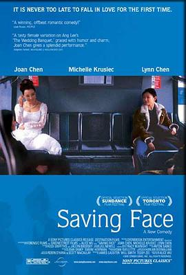

面子 / Saving Face
又名：爱·面子
作品信息
| 导演 | 伍思薇 |
| 编剧 | 伍思薇 |
| 主演 | 杨雅慧 / 陈冲 / 陈凌 / 王进 / 杨明燊 / 艾托·艾桑多 / 杰西卡·赫特 / Guang Lan Koh / 大卫·石 / Nathanel Geng / Mao Zhao / Louyong Wong / Clare Sum / Qian Luo / Richard Chang / 李勋 / 鹿瑜 / 帕米拉·佩顿-赖特 / Tina Johnson / Regina Lobiondo / Danny Lee |
| 类型 | 剧情 / 喜剧 / 爱情 / 同性 |
| 制片国家/地区 | 美国 |
| 语言 | 英语 / 汉语普通话 / 上海话 |
| 上映日期 | 2004-09-12(多伦多电影节) |
| 片长 | 91 分钟 / 96 分钟(美国) |
| IMDb | tt0384504 |
最后一次看到是 2026-08-12T21:13:21+08:00 · 豆瓣原页